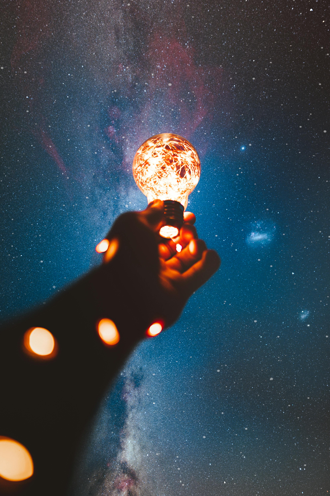

"If you hear a voice within you say, ‘You cannot paint,’ then by all means paint, and that voice will be silenced."
~ Vincent van Gogh ~
"The nitrogen in our DNA, the calcium in our teeth, the iron in our blood, the carbon in our apple pies were made in the interiors of collapsing stars."
~ Carl Sagan (Cosmos)~

"And so we beat on, boats against the current, borne back ceaselessly into the past."